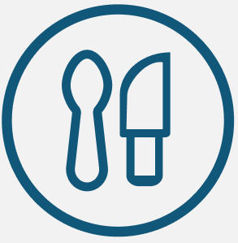

About Us
"GoSH" is your travel companion for exploring Shanghai, making your trip smoother, more enjoyable, and truly unforgettable.

Find the Best Dining Spot
Find must-try restaurants recommended by locals and explore our top-rated dining list. Easily filter options to find the best places that match your taste.
Explore Attractions with Ease
Discover attractions that match your interests, whether in nature, culture, or architecture. Hover over pictures for more information and click the star button to add favorites.
Personalised Plan
Add your favorite restaurants and sights to "Me" page by clicking the "star" icon at the top-right corner of the card to add them to your favorites. In this way, you can easily organize the tourist attractions and restaurants you want to visit and plan the route.
Contact Us
We strive to respond to all the messages within 48 hours. Thank you for your patience and interest.